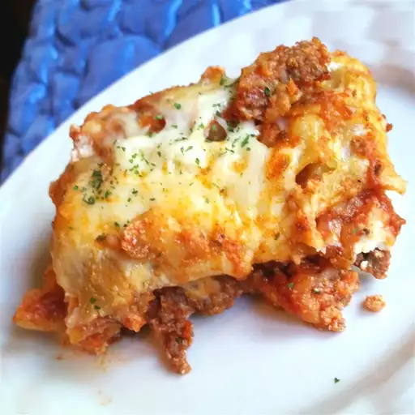

Lasagna

Description
This lasagna recipe is very easy and simple. With minimal
ingredients you can arouse your tastebuds for that next
bite. Served with a side of your favourite salad, you will
not be disappointed.
Ingredients
- 1 lb Ground Meat
- 2 packages Lasagna Noodles
- 4 cups Grated Mozzarella Cheese
- 3 cups Tomato Sauce
- 1 cup Tomato Paste
- 2 cups Mushrooms (sliced)
Steps
- Cook ground beef in a large skillet over medium
heat until the meat is browned. Add tomato
sauce, tomato paste, mushrooms and stir until well combined
and heated through.
- Spoon a layer of the meat mixture onto the bottom of
a slow cooker. Add a double layer of uncooked lasagna
noodles, breaking noodles to fit into cooker as needed.
Top noodles with a portion of cheese. Repeat
the layering of sauce, noodles, and cheese until all
the ingredients are used.
- Cover and cook on low heat for 4 to 6 hours.